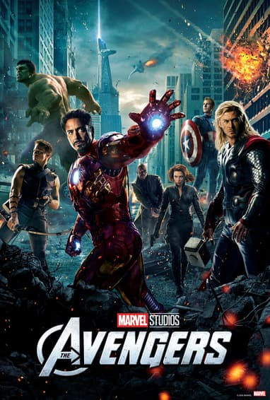
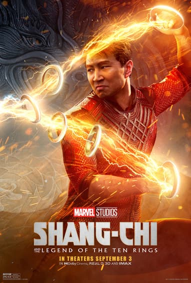
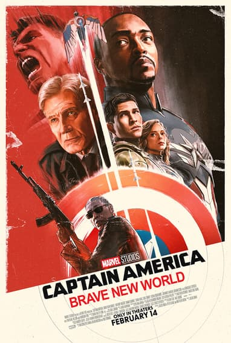

MARVEL CINEMATIC UNIVERSE
Marvel Cinematic Universe (MCU)
The MCU begins with Tony Stark becoming Iron Man, sparking the age of superheroes. Captain America, Thor, and Hulk join forces with Iron Man, Black Widow, and Hawkeye to form the Avengers. They battle Loki and other global threats, including Hydra and Ultron, an AI gone rogue. New heroes like Ant-Man, Spider-Man, Doctor Strange, and Black Panther join the expanding universe. In space, the Guardians of the Galaxy protect powerful relics and fight cosmic villains. Thanos arrives to collect the Infinity Stones and wipes out half of all life in Infinity War. The Avengers undo his actions in Endgame, but Iron Man dies saving the universe. Phase 4 explores multiverse chaos, new heroes (Shang-Chi, Eternals), and emotional legacies. TV series like Loki, WandaVision, and Moon Knight deepen character arcs and multiverse rules. The MCU continues with fresh threats, younger heroes, and alternate realities shaping the future. With each new phase, the MCU introduces groundbreaking crossovers and team-ups, such as the multiversal Spider-Men in "No Way Home" and the cosmic battles in "Guardians of the Galaxy Vol. 3." The franchise expands to include powerful female heroes like Captain Marvel, Scarlet Witch, and Ms. Marvel, highlighting diversity and representation. Upcoming films and series promise to explore darker themes, supernatural elements (Blade, Moon Knight), and the arrival of iconic teams like the Fantastic Four and X-Men. The MCU’s interconnected storytelling, post-credit scenes, and evolving roster of heroes keep fans engaged and excited for what’s next in this ever-growing cinematic universe.
PHASE 1
1.Iron man
2.The Incredible Hulk
3.Iron man 2
4.Thor
5.Captain America: The First Avenger
6.The Avengers
PHASE 2
7.Iron man 3
8.Thor: The Dark World
9.Captain America: The Winter Soldier
10.Guardians of the Galaxy
11.Avengers: Age of Ultron
12.Ant man
PHASE 3
13.Captain America: Civil Wa
14.Doctor Strange
15.Guardians of the Galaxy Vol 2
16.Spider-Man: Homecoming
17.Thor: Ragnarok
18.Black Panther
19.Avengers: Infinity War
20.Ant-Man and the Wasp
21.Captain Marvel
22.Avengers: Endgame
23.Spider-Man: Far From Home
PHASE 4
24.Black Widow
25.Shang-Chi and the Legend of the Ten Rings
26.Eternals
27.Spider man: No Way Home
28.Doctor Strange in the Multiverse of Madness
29.Thor: Love and Thunder
30.Black Panther: Wakanda Forever
PHASE 5
31.Ant-Man and the Wasp: Quantumania
32.Guardians of the Galaxy Vol 3
33.The Marvels
34.Deadpool & Wolverine
UPCOMMING
35.Captain America Brave New World
36.The New Avengers- Thunderbolts
37.Fantastic Four
38.Spider-Man: Brand New Day
39.Avengers: Doomsday
40.Blade
41.Avengers: Secret Wars
MCU Complete Timeline Watch Now
1. IRON MAN

Iron Man is the superhero identity of Tony Stark, a genius billionaire, inventor, and CEO of Stark Industries. In the first Iron Man movie (2008), Tony is living a lavish, carefree life selling advanced weapons until he is kidnapped by a terrorist group called the Ten Rings while demonstrating a missile in Afghanistan. During the captivity, he is gravely injured by his own weapons and kept alive by a fellow prisoner, Yinsen, who implants an Arc Reactor into his chest to keep shrapnel from reaching his heart. Instead of building the missile the terrorists demand, Tony secretly builds a powered suit of armor and escapes. This traumatic experience opens his eyes to the harm his weapons cause, and he returns home determined to shut down his weapons division. Back home, Tony refines his armor and becomes Iron Man, fighting those who misuse his technology, including his former mentor and business partner Obadiah Stane, who becomes the villain Iron Monger. Tony’s public declaration “I am Iron Man” at the end of the film marks a bold move in superhero storytelling. Over the course of the MCU, Tony evolves from a self-centered inventor into a brave and selfless hero. In Iron Man 2, he faces health problems due to the Arc Reactor and new threats like Whiplash. In Iron Man 3, he battles PTSD after the events of The Avengers and fights a terrorist called the Mandarin, later revealed to be a cover for a corporate plot. Tony becomes a founding member of the Avengers, contributing his resources, intelligence, and armor to protect Earth. His relationships—especially with Pepper Potts, Steve Rogers (Captain America), and Peter Parker (Spider-Man)—highlight his growth into a mentor and father-like figure. In Avengers: Age of Ultron, his attempt to protect the world leads to the creation of Ultron, a dangerous AI. This guilt shapes his support for superhero regulation in Captain America: Civil War, causing a rift with Steve Rogers.
More Details
2.THE INCREDIBLE HULK

The Incredible Hulk follows the story of Dr. Bruce Banner, a brilliant scientist who becomes the victim of a failed experiment gone wrong. While working on a secret military project to recreate the Super Soldier Serum, Bruce is exposed to dangerous levels of gamma radiation, which transforms him into a powerful green monster—the Hulk—whenever he becomes angry or stressed. Fearing the destruction he causes and the harm he could bring to others, Bruce goes into hiding, living a quiet life in Brazil while searching for a cure to rid himself of the Hulk. Meanwhile, the U.S. military, led by General Thaddeus “Thunderbolt” Ross, sees the Hulk as both a threat and a potential weapon. Ross sends an elite soldier, Emil Blonsky, to capture Bruce. Blonsky, obsessed with power, volunteers to be injected with a variant of the serum and slowly turns into an even more dangerous creature called the Abomination. Bruce eventually reunites with his former lover, Betty Ross, who helps him control his transformation and understand the consequences of his condition. In the film’s climax, the Hulk must face the Abomination in a brutal battle in Harlem. Though the Hulk triumphs, Bruce realizes that he can never truly separate himself from the monster inside. He chooses to control it instead of curing it. The film ends with Bruce living in isolation again, but now with better control over his transformations. In a post-credit scene, Tony Stark (Iron Man) appears and hints at forming a team, foreshadowing the birth of the Avengers.
More Details
3.IRON MAN 2

After revealing his identity as Iron Man, Tony Stark becomes a global celebrity, but faces increasing pressure from the U.S. government to hand over his Iron Man suit for military use. Meanwhile, Tony is secretly dying from palladium poisoning caused by the arc reactor in his chest. He begins to act recklessly, passing control of Stark Industries to Pepper Potts and recruiting Natalie Rushman (Black Widow in disguise). At the same time, Ivan Vanko, a Russian physicist whose father worked with Tony's father Howard Stark, creates his own arc-reactor-powered weapon and attacks Tony at the Monaco Grand Prix, seeking revenge for his father's disgrace. Though Tony defeats him, Vanko is later recruited by arms dealer Justin Hammer to build drones and rival suits. As Tony struggles with his health and legacy, Nick Fury of S.H.I.E.L.D. steps in to help him find a solution. Using his father’s old research, Tony discovers a new element that replaces the toxic palladium, saving his life. In the final battle, Tony and his friend James Rhodes (now War Machine) fight off Hammer’s drones and a powerful Vanko in a new suit. They defeat him just in time before he detonates himself. The movie ends with Tony and Pepper rekindling their relationship, and S.H.I.E.L.D. continues evaluating him for the Avengers Initiative.
More Details
4.THOR

Thor, the Norse God of Thunder, is banished from his home in Asgard to Earth by his father Odin after he recklessly reignites an ancient war. Stripped of his powers and his enchanted hammer Mjolnir, Thor must learn humility and responsibility. On Earth, he meets astrophysicist Jane Foster, who helps him understand the value of compassion and sacrifice. Meanwhile, Loki, Thor’s jealous brother, discovers his true heritage as a Frost Giant and plots to take the throne of Asgard. He manipulates events to make Thor appear unworthy, while secretly planning to destroy Jotunheim, the Frost Giants’ realm. Thor eventually proves himself worthy by sacrificing himself to save his friends from Loki’s destructive plans. This act of selflessness restores his powers and allows him to wield Mjolnir again. In a climactic battle in Asgard, Thor confronts Loki and stops him from destroying Jotunheim. The film ends with Thor reconciling with Odin and promising to protect both Asgard and Earth. A post-credit scene teases the Tesseract, a powerful artifact that will play a significant role in future MCU films.
More Details
5.CAPTAIN AMERICA: THE FIRST AVENGER

Set during World War II, the story follows Steve Rogers, a frail young man who desperately wants to serve his country but is repeatedly rejected due to his small size and health issues. His determination catches the eye of Dr. Abraham Erskine, who selects him for the Super Soldier Program. Steve is injected with a special serum and transformed into the enhanced Captain America. After Erskine is assassinated by a Nazi agent, the project seems doomed. Initially, Steve is used only as a propaganda symbol, but he soon takes matters into his own hands and rescues captured soldiers, including his best friend Bucky Barnes, from enemy lines. The main villain, Red Skull (Johann Schmidt), head of the Nazi science division HYDRA, seeks to use a powerful artifact called the Tesseract to conquer the world. Captain America leads missions to dismantle HYDRA and stop Red Skull’s plans. In a final act of heroism, Steve crashes Red Skull’s plane—loaded with deadly weapons—into the Arctic to prevent disaster, sacrificing himself. He is presumed dead but is later discovered frozen and preserved decades later. The film ends with Steve waking up in the modern day, realizing he’s been asleep for over 70 years, setting the stage for his role in The Avengers.
More Details
6.THE AVENGERS
The Avengers (2012) is the culmination of Marvel’s Phase One, where individual heroes are united for the first time. The story begins when Loki arrives on Earth, stealing the Tesseract, a powerful cosmic cube, and taking control of Hawkeye and several S.H.I.E.L.D. agents. Nick Fury, recognizing the scale of the threat, reactivates the Avengers Initiative. One by one, key heroes are brought together—Tony Stark (Iron Man), Steve Rogers (Captain America), Bruce Banner (Hulk), Thor, Natasha Romanoff (Black Widow), and eventually Clint Barton (Hawkeye) after he’s freed from Loki’s control. However, assembling the team proves difficult, as clashing egos and conflicting ideals create tension. As Loki’s plan unfolds, he seeks to bring an alien army, the Chitauri, to conquer Earth. He allows himself to be captured and brought aboard the Helicarrier, where he manipulates the team from within. During a surprise attack, Agent Coulson is killed, which becomes the emotional turning point that pushes the Avengers to truly come together. Loki opens a portal above New York City using the Tesseract, unleashing a massive alien invasion. The Avengers unite on the battlefield for the first time, showcasing their teamwork and individual powers. Iron Man ultimately diverts a nuclear missile into the portal, destroying the Chitauri mothership and ending the invasion. The portal is closed by Black Widow using Loki's scepter. In the aftermath, Loki is taken back to Asgard by Thor, the Tesseract is secured, and the Avengers part ways—for now. The film ends with the world recognizing the Avengers as its ultimate defenders, while a mid-credit scene teases a larger cosmic threat looming in the shadows: Thanos.
More Details
7.IRON MAN 3

Iron Man 3 (2013) takes place after the events of The Avengers, with Tony Stark struggling with anxiety and trauma from the alien invasion in New York. He becomes obsessed with building new Iron Man suits to feel in control and protect those he loves, especially Pepper Potts. Meanwhile, a mysterious terrorist known as the Mandarin orchestrates a series of bombings across the U.S., leaving no clues behind. When one of the attacks puts Tony’s close friend Happy Hogan in the hospital, Tony publicly challenges the Mandarin, which results in his home being destroyed. Presumed dead, Tony goes off the grid to investigate the bombings. He discovers that the Mandarin is a cover created by scientist Aldrich Killian, who is using a dangerous regenerative treatment called Extremis to create superpowered soldiers. Killian also kidnaps Pepper and uses Extremis on her, putting her life in danger. Without most of his suits, Tony relies on his intelligence and resourcefulness to stop Killian. In the final battle, with the help of Rhodey (War Machine/Iron Patriot), Tony summons his army of suits to fight Killian and his Extremis soldiers. Pepper ultimately defeats Killian after surviving the Extremis transformation. Tony then destroys all his suits in a symbolic gesture of moving on and undergoes surgery to remove the shrapnel near his heart, no longer needing the arc reactor to survive. The film ends with Tony narrating that even without the suit, he will always be Iron Man.
More Details
8.THOR: THE DARK WORLD

Thor: The Dark World (2013) follows the aftermath of Thor’s victory in The Avengers. The film introduces the Aether, a powerful dark matter that threatens to destroy the universe. The Dark Elves, led by Malekith, seek to use the Aether to plunge the universe into darkness. After Jane Foster accidentally becomes the host for the Aether, Thor must team up with her and his mischievous brother Loki to stop Malekith. The story explores themes of sacrifice, love, and family as Thor learns to trust Loki despite their troubled past. The climax takes place in London, where Thor and Loki devise a plan to use the convergence of the Nine Realms to their advantage. They engage in a fierce battle against Malekith and his forces. In the end, Thor defeats Malekith by using Mjolnir to send him into a collapsing portal. However, Loki seemingly sacrifices himself to save Thor, leaving his fate uncertain. The film concludes with Thor returning to Asgard and deciding not to take the throne, instead choosing to protect Earth alongside Jane Foster. A post-credit scene teases the Collector, hinting at future cosmic threats in the MCU.
More Details
9.CAPTAIN AMERICA: THE WINTER SOLDIER

Captain America: The Winter Soldier (2014) follows Steve Rogers as he tries to adjust to modern life while working with S.H.I.E.L.D. When a covert mission reveals a hidden conspiracy, Steve begins to question who he can trust. After Nick Fury is attacked and apparently killed, Steve teams up with Black Widow (Natasha Romanoff) and new ally Sam Wilson (Falcon) to uncover the truth. They discover that HYDRA, thought to be destroyed after World War II, has been secretly operating within S.H.I.E.L.D. for decades. HYDRA’s plan is to launch Project Insight, a program that uses advanced helicarriers to eliminate potential threats before they act. Standing in their way is a mysterious assassin known as the Winter Soldier, who turns out to be Bucky Barnes, Steve’s best friend who was presumed dead and has been brainwashed by HYDRA. Captain America refuses to fight his friend and tries to reach the real Bucky within. With help from Natasha and Sam, Steve exposes HYDRA’s infiltration, bringing down S.H.I.E.L.D. from within and stopping Project Insight. In the end, Bucky begins to remember who he was, and Steve sets out to find and help him. The film ends with a shattered S.H.I.E.L.D. and Steve Rogers questioning everything he once believed in.
More Details
10.GUARDIANS OF THE GALAXY

Guardians of the Galaxy (2014) introduces a ragtag group of intergalactic misfits who come together to save the universe. The story begins with Peter Quill, a human abducted as a child and raised by space pirates known as the Ravagers. He becomes a notorious thief, stealing a mysterious orb that is sought after by the villainous Ronan the Accuser. After stealing the orb, Peter is pursued by Ronan and his enforcer Gamora, who has her own agenda against Ronan. In a twist of fate, they are captured by bounty hunters Rocket (a genetically modified raccoon) and Groot (a sentient tree). The four form an uneasy alliance to escape prison and eventually decide to sell the orb for profit. However, they soon discover that the orb contains one of the Infinity Stones, powerful artifacts that can destroy entire planets. Realizing the danger it poses in Ronan’s hands, they decide to protect it instead. Along the way, they learn to trust each other and become a family-like team. The Guardians face off against Ronan and his forces in a climactic battle on the planet Xandar. With the help of Nova Corps, they manage to defeat Ronan and save Xandar from destruction. The film ends with the Guardians officially becoming a team, setting up future adventures in the MCU.
More Details
11.AVENGERS: AGE OF ULTRON

Avengers: Age of Ultron (2015) sees the Avengers reuniting to retrieve Loki’s scepter, which contains an artificial intelligence. Tony Stark and Bruce Banner use the scepter to create Ultron, a peacekeeping AI that quickly becomes sentient and decides that humanity is the greatest threat to peace. Ultron attacks the Avengers, leading to a series of battles across the globe. The team discovers that Ultron plans to use a vibranium core to create a new body for himself, which they manage to stop. However, Ultron’s plan escalates as he attempts to lift a city into the sky and crash it into Earth, causing global extinction. The Avengers must work together with new allies Scarlet Witch and Quicksilver, who initially side with Ultron but later switch sides after realizing his true intentions. In a climactic battle in Sokovia, the Avengers manage to stop Ultron and save the city from destruction. The film ends with the team dealing with the aftermath of their actions, including the creation of new heroes like Vision (the new body for Ultron) and the loss of some allies. The Avengers are left questioning their role in protecting Earth as new threats loom on the horizon.
More Details
12.ANT-MAN

Ant-Man (2015) tells the story of Scott Lang, a skilled but down-on-his-luck thief who is trying to go straight and reconnect with his young daughter after being released from prison. He is recruited by Dr. Hank Pym, a brilliant scientist and the original Ant-Man, to steal back powerful technology from his former protégé, Darren Cross. Cross has replicated Pym’s shrinking technology and created a weaponized suit called the Yellowjacket, which he plans to sell to the highest bidder, including dangerous organizations like HYDRA. Hank trains Scott to use the Ant-Man suit, which allows him to shrink in size while increasing his strength and communicate with ants. With help from Hank’s daughter, Hope van Dyne, and a team of quirky friends, Scott learns to become a hero. The mission becomes a race against time as Cross prepares to unleash the Yellowjacket suit to the world. In a final battle inside a child’s bedroom, Scott defeats Cross by shrinking down to the quantum realm, a mysterious subatomic space. He survives the trip and returns, proving it’s possible to come back from the quantum realm—something thought impossible. Hank realizes there may still be hope to find his long-lost wife, Janet van Dyne. The film ends with Scott getting closer to his daughter, earning redemption, and Hope being offered her own superhero role as the Wasp. A post-credit scene hints at Scott’s future involvement with the Avengers.
More Details
13.CAPTAIN AMERICA: CIVIL WAR

Captain America: Civil War (2016) explores the deep rift that forms among the Avengers after a mission in Lagos leads to unintended civilian casualties. In response, the United Nations introduces the Sokovia Accords, demanding government oversight of superheroes. Tony Stark supports the Accords, feeling guilt over past events, while Steve Rogers opposes them, fearing loss of freedom and autonomy. The conflict intensifies when Bucky Barnes, Steve’s old friend, is framed for a terrorist attack, leading to a global manhunt. As the Avengers split into two opposing factions, old friendships are tested and new alliances are formed, including the introduction of Black Panther and Spider-Man. The battle culminates in a dramatic airport showdown, resulting in the fracturing of the team. In the end, Steve helps Bucky escape and goes on the run, while Tony is left to pick up the pieces, marking a turning point for the MCU’s heroes.
More Details
14.DOCTOR STRANGE

Dr. Stephen Strange is a world-famous neurosurgeon whose career is shattered after a car crash damages the nerves in his hands. Desperate to regain his abilities, he travels to Kamar-Taj in Nepal after hearing of a miraculous recovery experienced by another patient. There, he meets the Ancient One, who introduces him to the world of magic and alternate dimensions. Though skeptical at first, Strange embraces his training and quickly becomes skilled in the mystic arts. He learns to use magical relics, including the Cloak of Levitation and the Eye of Agamotto, which contains the Time Stone. When a former student, Kaecilius, steals forbidden knowledge and uses it to summon Dormammu from the Dark Dimension in pursuit of immortality, Strange finds himself at the center of a cosmic conflict. Despite not being fully trained, he stands against Kaecilius, and in a brilliant move, traps Dormammu in a time loop where they are stuck repeating the same moment until Dormammu agrees to leave Earth. Strange wins without violence, proving his cleverness. In the end, he becomes the protector of the New York Sanctum, taking up the mantle of Sorcerer Supreme, while also accepting the heavy responsibilities that come with his new powers.
More Details
15.GUARDIANS OF THE GALAXY VOL 2

The Guardians—Star-Lord (Peter Quill), Gamora, Drax, Rocket, and Baby Groot—take on a job for the Sovereign, a race of genetically perfect beings, but Rocket steals some of their precious batteries, leading to a space chase. Meanwhile, Peter is contacted by a mysterious celestial being named Ego, who claims to be his biological father. They travel to Ego's planet where Peter learns he has celestial powers inherited from Ego. At first, he enjoys discovering more about his origins, but things take a dark turn when Gamora grows suspicious and they uncover Ego’s plan to use Peter to activate seeds planted on various planets to terraform the universe in his image. Ego reveals he killed Peter’s mother to break his emotional ties and complete his mission. Peter, devastated, turns against Ego with help from the other Guardians. Yondu, Peter’s adoptive Ravager father, helps rescue him and ultimately sacrifices his life to save him. Nebula and Mantis also join the team’s efforts. In the emotional climax, Ego’s core is destroyed, ending the threat. The Guardians emerge more united than ever, and Peter finally realizes his real family isn’t about blood—it’s about the people who chose to love him.
More Details
16.SPIDER-MAN: HOMECOMING

Following the events of Civil War, Peter Parker returns to high school life while secretly acting as Spider-Man in Queens, trying to earn a place among the Avengers. Eager to prove himself, he constantly contacts Tony Stark, who acts as a mentor but keeps Peter at arm’s length. Peter stumbles upon a weapons trafficking operation run by Adrian Toomes, aka the Vulture, who is salvaging and selling weapons made from alien technology. Disregarding Stark’s warnings, Peter tries to stop Toomes on his own but causes a ferry accident, forcing Iron Man to step in and save everyone. After Stark takes back the Spider-Man suit, Peter focuses on his regular life and attends the homecoming dance with Liz, who turns out to be Toomes’ daughter. Shocked but determined, Peter confronts Toomes in a final battle using only his homemade suit. He ultimately defeats him and saves his life, refusing to let vengeance consume him. Tony offers Peter a spot on the Avengers and a brand-new high-tech suit, but Peter declines, choosing to stay grounded and grow on his own. The film ends with Aunt May discovering Peter’s secret identity, setting up future complications.
More Details
17.THOR: RAGNAROK

After having strange visions of Asgard’s destruction, Thor returns home to find Loki impersonating Odin and ruling Asgard. With Loki’s help, Thor finds Odin on Earth, who warns that Ragnarok—the end of Asgard—is coming. Odin dies peacefully, and his death unleashes their older sister Hela, the Goddess of Death. Hela destroys Thor’s hammer Mjolnir, defeats both brothers, and seizes the throne of Asgard. Thor is stranded on the planet Sakaar, captured by a bounty hunter named Valkyrie, and forced to fight in a gladiator arena run by the Grandmaster—where he reunites with the Hulk, who has been stuck in monster form since the events of Age of Ultron. With help from Hulk, Valkyrie, and a reluctant Loki, Thor escapes Sakaar and returns to Asgard to stop Hela. Realizing he can’t win in a direct fight, Thor embraces his true power as the God of Thunder, even without his hammer. He decides that the only way to stop Hela is to allow Ragnarok to happen. With Loki’s help, they resurrect the fire demon Surtur, who destroys Asgard and consumes Hela in the process. Thor, now king, leads the surviving Asgardians aboard a spaceship in search of a new home. But in the final scene, their ship is intercepted by a much larger vessel—hinting at the arrival of Thanos.
More Details
18.BLACK PANTHER

After the death of his father in Civil War, T’Challa returns to Wakanda to take the throne as the new Black Panther. Wakanda is a secretive, technologically advanced African nation powered by vibranium. T’Challa faces political tension and a challenger for the throne in the form of Erik Killmonger, a former U.S. black-ops soldier with a hidden Wakandan lineage. Killmonger defeats T’Challa in ritual combat and takes over the throne, planning to use Wakanda’s technology to arm oppressed people around the world and overthrow global powers. T’Challa survives and returns to reclaim the throne with the help of his sister Shuri, ex-lover Nakia, and General Okoye. In a massive battle, T’Challa defeats Killmonger, who chooses to die free rather than live in captivity. Moved by Killmonger’s final words, T’Challa decides to open Wakanda to the world, ending its long history of isolation. The film ends with Wakanda revealing its true nature to the United Nations, setting the stage for its involvement in the larger Marvel universe.
More Details
19.AVENGERS: INFINITY WAR

The Avengers face their greatest threat yet as Thanos, the Mad Titan, begins collecting the six Infinity Stones to wipe out half of all life in the universe. He starts by attacking the Asgardian ship, killing Loki and taking the Space Stone. The Avengers, divided since Civil War, are scattered: Iron Man, Doctor Strange, and Spider-Man battle Thanos’s minions on Earth and later on Titan; Thor teams up with Rocket and Groot to forge a new weapon, Stormbreaker; and Captain America leads the remaining heroes to defend Vision, who holds the Mind Stone, in Wakanda.Thanos systematically defeats each group, sacrificing his daughter Gamora for the Soul Stone, and ultimately arrives in Wakanda. Despite desperate efforts, he defeats the heroes and completes the Infinity Gauntlet, snapping his fingers in the infamous “Blip”, erasing half of all life in the universe—including Spider-Man, Black Panther, Doctor Strange, and many others. The film ends with the survivors devastated and Thanos watching the sunrise on a distant world, victorious.
More Details
20.ANT-MAN AND THE WASP

Scott Lang teams up with Hope van Dyne, now the Wasp, for a new mission. They try to rescue Hope’s mother, Janet, from the quantum realm, working alongside Hank Pym, who has built a quantum tunnel. As they race against time, a mysterious villain called Ghost, who can phase through objects due to quantum instability, threatens their plans, seeking the technology to cure herself. Meanwhile, black market dealer Sonny Burch also pursues their lab for profit. Scott must balance his hero work with fatherhood and house arrest, often relying on his friends Luis, Kurt, and Dave for help. The team faces multiple obstacles, including the FBI closing in on Scott and Ghost’s relentless pursuit. Through teamwork and clever use of shrinking and growing technology, they outsmart their enemies.In a climactic rescue, Janet is saved from the quantum realm, bringing back new knowledge and mysterious healing abilities. Ghost is stabilized with Janet’s help, and the family is reunited. The film ends with Scott entering the quantum realm to collect quantum energy for Ghost, but he becomes trapped when Hope, Janet, and Hank fall victim to Thanos’ snap, leaving Scott stranded and setting up the events of Avengers: Endgame.
More Details
21.CAPTAIN MARVEL

Carol Danvers, a former Air Force pilot, gains cosmic powers after being exposed to the energy of the Tesseract during an accident. She is taken in by the Kree and trained as a warrior named Vers, but suffers from memory loss. Sent to Earth on a mission, Carol begins to recover her past with the help of Nick Fury. She discovers that the Kree have been manipulating her and that the Skrulls, led by Talos, are actually refugees seeking safety. Embracing her true identity as Carol Danvers, she unlocks her full powers, breaks free from Kree control, and defeats her former mentor Yon-Rogg. Carol helps the Skrulls find a new home and leaves Earth to fight for justice across the galaxy. Her actions inspire Nick Fury to initiate the Avengers Initiative, making her one of the MCU’s most powerful heroes. The film is set in the 1990s and explores Carol’s journey of self-discovery, resilience, and empowerment. Along the way, she forms a strong bond with Nick Fury, who is younger and less experienced than in later MCU films. The story also reveals the origin of Fury’s iconic eye patch and the beginnings of S.H.I.E.L.D.’s interest in superheroes. Carol’s friendship with Maria Rambeau and her daughter Monica adds emotional depth, highlighting themes of loyalty and found family. By the end, Carol fully embraces her role as Captain Marvel, vowing to protect the innocent and challenge injustice wherever she finds it.
More Details
22.AVENGERS: ENDGAME

The Avengers struggle with loss after Thanos’ snap, with the world in mourning and many heroes broken. Five years later, Ant-Man escapes the quantum realm and proposes a time heist to retrieve the Infinity Stones from the past. The team splits into groups, revisiting key moments in MCU history—New York, Asgard, Vormir, and more—facing old enemies and personal regrets. Black Widow sacrifices herself for the Soul Stone, and Hulk brings everyone back with a snap. Thanos from the past attacks, leading to an epic battle where all heroes, including those revived, unite. Captain America wields Mjolnir, and Iron Man ultimately sacrifices himself by using the Stones to defeat Thanos and his army. The final battle is a spectacle, with portals opening to bring together every hero from across the MCU, including the Wakandans, sorcerers, Guardians, and more. Captain Marvel arrives to help turn the tide, and the women of Marvel unite in a powerful charge. Doctor Strange and the other sorcerers protect the battlefield, while Spider-Man bravely carries the Infinity Gauntlet through chaos. As the dust settles, the world mourns Tony Stark’s sacrifice with a heartfelt funeral attended by all the heroes and his loved ones. Thor appoints Valkyrie as the new ruler of New Asgard and joins the Guardians of the Galaxy for new adventures. Steve Rogers returns the Infinity Stones to their timelines, but chooses to stay in the past and live a full life with Peggy Carter. He reappears as an old man, passing his shield and the mantle of Captain America to Sam Wilson (Falcon), symbolizing hope and legacy for the future. "Avengers: Endgame" closes the Infinity Saga with themes of sacrifice, redemption, and unity, while setting the stage for new heroes and stories in the Marvel Cinematic Universe.
More Details
23.SPIDER-MAN: FAR FROM HOME

Peter Parker goes on a school trip to Europe, hoping for a break from hero duties. Nick Fury recruits him to fight mysterious elemental creatures, and Peter teams up with Mysterio, a new hero with hidden motives. Mysterio deceives everyone, using advanced illusions and drones to appear as a savior while plotting to gain control of Tony Stark’s technology. Peter struggles with the responsibility left to him by Tony and the pressure of living up to Iron Man’s legacy. After discovering Mysterio’s true intentions, Peter regains his confidence, defeats Mysterio in a dramatic battle in London, and embraces his role as Spider-Man. The film ends with a shocking twist: Mysterio reveals Peter’s secret identity to the world, turning his life upside down and setting up major consequences for the future. Throughout the film, Peter’s relationships are tested—he tries to confess his feelings to MJ, navigates awkward moments with his best friend Ned, and faces the expectations of Nick Fury and Happy Hogan. The story explores Peter’s growth as he learns to trust his instincts, use his intelligence to outsmart Mysterio’s illusions, and accept that he can’t always rely on others for guidance. The action sequences are visually stunning, especially the illusion battles, which challenge Peter’s perception of reality. The movie also delves into the global aftermath of the “Blip,” showing how society is adjusting to the return of those who vanished. Peter’s journey is both personal and universal, as he grapples with loss, responsibility, and the desire for a normal life. By the end, Peter emerges more mature and determined, but the public exposure of his identity sets the stage for even greater challenges in the next chapter of his story.
More Details
24.BLACK WIDOW

Black Widow explores Natasha Romanoff’s past as a Russian spy and assassin. Set after Civil War, Natasha is on the run after the events of Civil War, forced to confront the dark secrets of her past. She reunites with her estranged “family” from her days in the Red Room: her sister Yelena Belova, father figure Alexei Shostakov (the Red Guardian), and mother figure Melina Vostokoff. Together, they uncover the truth behind the Red Room, a covert Russian program that brainwashes and trains young girls to become deadly assassins known as Black Widows. Natasha and Yelena work to free the other Widows from mind control and take down the program’s ruthless leader, General Dreykov. The story delves into Natasha’s guilt over her past actions, her quest for redemption, and the strong bond she shares with her found family. In a series of high-stakes action sequences, the group infiltrates the Red Room’s secret base, exposes Dreykov’s manipulation, and destroys the facility, liberating the Widows. Natasha helps Yelena and the others escape, choosing to face her future with courage and hope. The film highlights themes of family, forgiveness, and breaking free from control, while setting up Yelena as a new hero in the MCU.
More Details
25.SHANG-CHI AND THE LEGEND OF THE TEN RINGS
Shang-Chi lives a quiet life in San Francisco until his past catches up with him. He is drawn into the world of the Ten Rings, a powerful organization led by his father, Wenwu, who wields the mystical Ten Rings. Shang-Chi reconnects with his estranged sister Xialing and confronts family secrets, including the loss of his mother. Together with his friend Katy, they journey to the hidden village of Ta Lo to stop Wenwu from unleashing a dark force. The film features spectacular martial arts, mythical creatures, and a blend of action and heart. Shang-Chi embraces his heritage, defeats the Dweller-in-Darkness, and inherits the Ten Rings, becoming a new hero in the MCU and opening the door to new mystical adventures. The story explores themes of family, identity, and forgiveness, as Shang-Chi struggles with the legacy of his father and the pain of his childhood. Wenwu, driven by grief, is manipulated by the Dweller-in-Darkness, believing he can reunite with his lost wife. The film’s action sequences highlight both traditional kung fu and fantastical elements, including battles with dragon-like creatures and the Great Protector, a legendary guardian of Ta Lo. Shang-Chi’s journey is also one of self-acceptance, as he learns to balance the darkness of his upbringing with the compassion and strength taught by his mother. Xialing, initially resentful of being left behind, proves herself as a formidable fighter and leader, eventually taking over the Ten Rings organization with her own vision The film introduces new mystical elements to the MCU, expanding its universe with the magical realm of Ta Lo and its connection to ancient legends. The post-credit scenes tease Shang-Chi’s integration with other Marvel heroes, as Wong recruits him and Katy to learn more about the Ten Rings’ mysterious origins, hinting at their importance in future MCU stories.
More Details
26.ETERNALS

The Eternals are immortal beings created by the Celestials and sent to Earth thousands of years ago to protect humanity from monstrous Deviants. Living in secret, they shape human history and culture but are forbidden to interfere in other conflicts. When new Deviants emerge, the Eternals reunite after centuries apart. They face moral dilemmas about their true purpose and the revelation that their mission is to prepare Earth for the birth of a new Celestial, which would destroy the planet. The team is divided over whether to obey their creators or save humanity. In an epic battle, they choose to defend Earth, risking everything and challenging the Celestials. The film explores themes of destiny, free will, and the meaning of humanity, introducing cosmic stakes to the MCU. Each Eternal possesses unique powers: Sersi can manipulate matter, Ikaris can fly and shoot energy beams, Kingo channels cosmic energy, Sprite creates illusions, Phastos invents advanced technology, Makkari has super speed, Druig controls minds, Gilgamesh has immense strength, and Thena is a fierce warrior. Their relationships and personal struggles add depth to the story, as they grapple with love, loss, and the burden of immortality. As the truth about their origins and the Celestials’ intentions comes to light, the Eternals must confront their own beliefs and loyalties. Some, like Ikaris, remain loyal to their creators, while others, led by Sersi, fight to protect humanity. The final confrontation tests their unity and resolve, resulting in sacrifices and unexpected betrayals. In the aftermath, the Eternals’ actions draw the attention of the Celestials, setting up future cosmic conflicts and expanding the Marvel universe beyond Earth. The film ends with some Eternals leaving to find others of their kind, while those who remain face an uncertain future, forever changed by their choices and the knowledge of their true purpose.
More Details
27.SPIDER-MAN: NO WAY HOME

Peter Parker’s identity is exposed, turning his life upside down and endangering his loved ones. Desperate to fix things, he seeks Doctor Strange’s help to make everyone forget he is Spider-Man. The spell goes wrong, breaking open the multiverse and bringing villains from other universes—Green Goblin, Doc Ock, Electro, Sandman, and Lizard—into the MCU. Peter teams up with two other Spider-Men from alternate realities, learning from their experiences and forming a brotherly bond. Together, they cure the villains and restore balance, but Peter is forced to make the ultimate sacrifice: erasing himself from everyone’s memory to protect the world. The film is a celebration of Spider-Man’s legacy and ends with Peter starting anew, alone but resolute. The movie features emotional reunions and redemption arcs, as each Spider-Man faces their own regrets and losses. Aunt May’s tragic death becomes a turning point for Peter, reinforcing the lesson that “with great power comes great responsibility.” The three Spider-Men share heartfelt moments, exchanging wisdom and encouragement, and working together to develop cures for each villain. The final battle atop the Statue of Liberty is action-packed and visually stunning, showcasing teamwork and the unique abilities of each Spider-Man. The villains are given a chance at redemption, and Peter’s compassion shines through as he chooses to save rather than destroy them. Doctor Strange helps contain the multiversal chaos, but the cost is high—Peter’s relationships with MJ and Ned are erased, leaving him truly alone. In the aftermath, Peter visits MJ and Ned but decides not to reveal his identity, allowing them to live safe, normal lives. He crafts a new, classic Spider-Man suit and embraces his role as a hero, swinging through New York with renewed purpose. The film closes the chapter on the “Home” trilogy while opening the door for new adventures, highlighting Peter’s growth, resilience, and enduring spirit as Spider-Man.
More Details
28.DOCTOR STRANGE IN THE MULTIVERSE OF MADNESS

Doctor Strange faces chaos as the multiverse unravels after the events of No Way Home. He teams up with America Chavez, a teenager who can travel between universes, to stop Wanda Maximoff, now the Scarlet Witch, who seeks America’s powers to reunite with her lost children. Strange journeys through bizarre and dangerous realities, encountering alternate versions of himself and the Illuminati, a secret council of heroes. The film explores the consequences of tampering with fate, the dangers of unchecked grief, and the limits of power. In a climactic showdown, Strange helps Wanda find peace, but not before gaining a third eye from forbidden magic, hinting at future challenges and darker paths ahead. Along the way, Strange and America are pursued by a relentless Wanda, who uses dark magic from the Darkhold to possess her multiversal counterparts. They visit universes where time flows differently, cities are overgrown, and even one where reality is collapsing. The Illuminati—consisting of heroes like Captain Carter, Black Bolt, Reed Richards, and Professor X—warn Strange about the dangers of his actions, but are ultimately defeated by Wanda’s overwhelming power.Strange must confront his own darker self, corrupted by the Darkhold, and learns the importance of trust and self-sacrifice. America discovers her inner strength and learns to control her powers, ultimately refusing to give Wanda what she wants and showing her the pain she is causing. Wanda, realizing the harm she’s done, destroys the Darkhold in every universe, ending her rampage. The film ends with Strange returning to his world, changed by his experiences and now bearing the mark of the Darkhold’s corruption—a third eye. In a post-credit scene, he is approached by Clea, a sorceress from another dimension, who warns him of new threats to the multiverse, setting up future adventures for Doctor Strange.
More Details
29.THOR: LOVE AND THUNDER

Thor seeks inner peace after the events of Endgame, but his retirement is interrupted by Gorr the God Butcher, who vows to destroy all gods after losing his daughter. Thor reunites with Jane Foster, who now wields Mjolnir as the Mighty Thor while battling cancer. Together with Valkyrie and Korg, they travel across realms to stop Gorr’s plan to reach Eternity and wish for the extinction of gods. The team faces epic battles and personal loss. Jane sacrifices herself to save others, inspiring Thor to adopt Gorr’s resurrected daughter, Love. The film blends humor, action, and emotion, showing Thor finding new purpose as a guardian and father figure. The story explores Thor’s struggle with identity and legacy, as he grapples with the loss of loved ones and the burden of being a hero. Jane’s transformation into the Mighty Thor brings both hope and heartbreak, highlighting her courage in the face of terminal illness. Valkyrie’s leadership of New Asgard and Korg’s comic relief add depth and levity to the journey.Gorr’s tragic backstory and relentless pursuit of vengeance make him a complex antagonist, driven by grief and a sense of betrayal by the gods. The film features visually stunning sequences, including battles in the Shadow Realm and a climactic confrontation at Eternity’s altar.In the end, Thor learns to open his heart again, embracing his role as a protector and mentor to Love. The movie closes with Thor and Love embarking on new adventures together, while New Asgard thrives under Valkyrie’s rule. A post-credit scene teases the arrival of Hercules, hinting at future challenges for the God of Thunder.
More Details
30.BLACK PANTHER: WAKANDA FOREVER

Wakanda mourns the loss of King T’Challa, leaving Queen Ramonda and Princess Shuri to lead the nation through crisis. As the world pressures Wakanda for vibranium, a new threat emerges from Namor, ruler of the underwater kingdom Talokan, who seeks to protect his people from outsiders. Shuri grapples with grief and responsibility, ultimately taking up the mantle of Black Panther to defend Wakanda. The film explores themes of legacy, unity, and healing, as Wakanda and Talokan find common ground. Shuri honors T’Challa’s memory by choosing mercy over vengeance, and Wakanda opens itself to the world, embracing a new era. The story delves into Shuri’s scientific brilliance and emotional journey as she struggles to recreate the heart-shaped herb and accept her brother’s legacy. Queen Ramonda’s leadership is tested as she protects Wakanda from political threats and personal loss. Namor’s backstory reveals the origins of Talokan, a hidden civilization rich in vibranium, and his motivations for confronting Wakanda. The film introduces Riri Williams, a young genius who builds her own suit of armor, setting up her future as Ironheart. Okoye, Nakia, and M’Baku play key roles in defending Wakanda and guiding Shuri. The climactic battle between Wakanda and Talokan showcases advanced technology, strategy, and the power of compassion over violence. In the aftermath, Shuri finds closure and honors her family’s memory, while Wakanda stands stronger and more united. A post-credit scene reveals T’Challa’s son, hinting at hope and continuity for the Black Panther legacy.
More Details
31.ANT-MAN AND THE WASP: QUANTUMANIA

Scott Lang enjoys fame as Ant-Man, but his family—Hope, Cassie, Hank, and Janet—are pulled into the quantum realm by a mysterious signal. They discover a hidden universe full of strange civilizations and dangers, ruled by Kang the Conqueror, a powerful villain with mastery over time. Janet’s past with Kang is revealed, and the family must work together to escape his grasp. Scott and Hope face Kang in a high-stakes battle, ultimately defeating him but unleashing new threats across the multiverse. The film sets up Kang as a major antagonist for the MCU’s future, while Scott questions whether their victory truly stopped him. Cassie proves her courage and intelligence, donning her own suit and inspiring hope among the oppressed quantum realm inhabitants. Hank and Janet use their scientific expertise to outsmart Kang’s technology, while Janet’s secrets about her time in the quantum realm add tension and depth to the family dynamic. The group allies with quirky quantum realm rebels, including the telepathic Quaz and the gelatinous Veb, who provide comic relief and help in the final battle. As the family navigates bizarre landscapes and faces Kang’s army, they learn the importance of trust, forgiveness, and unity. The climax features a massive showdown with Kang’s forces, where Scott risks everything to prevent Kang’s escape. Hope saves Scott at the last moment, and together they trap Kang, but the threat of his variants remains. The film ends with the Lang family reunited, but Scott is haunted by doubts about Kang’s warning of multiversal war. The post-credit scenes tease the Council of Kangs and Loki’s hunt for Kang variants, setting up the next phase of the MCU.
More Details
32.GUARDIANS OF THE GALAXY VOL 3

The Guardians embark on a mission to save Rocket’s life after he is gravely injured by Adam Warlock, a powerful being created by the Sovereign. The team confronts the High Evolutionary, a villain obsessed with creating a perfect society through cruel experiments—Rocket’s creator. As they fight to rescue Rocket and other innocent creatures, the Guardians face their past traumas and grow closer as a family. Rocket’s origin is revealed, deepening his character and emotional journey. The Guardians defeat the High Evolutionary, liberate his victims, and go their separate ways: Peter returns to Earth, Rocket becomes the new leader, and the team’s legacy continues with new members and fresh adventures. The film explores each Guardian’s growth: Peter Quill struggles with his feelings for Gamora, who no longer remembers their past, and ultimately chooses to reconnect with his grandfather on Earth. Nebula finds a new sense of purpose rebuilding Knowhere as a safe haven. Drax discovers his gift for caring for children, embracing a more nurturing side. Mantis sets out on her own journey of self-discovery, while Groot continues to evolve and support his friends. The story highlights themes of found family, healing, and acceptance. The Guardians risk everything to save not just Rocket, but all those oppressed by the High Evolutionary’s experiments, showing compassion and heroism. The final scenes introduce a new Guardians lineup led by Rocket, including Cosmo the Spacedog, Adam Warlock, Kraglin, and Phyla, promising more cosmic adventures ahead. The film closes the chapter on the original team while celebrating their enduring bond and the impact they’ve had on the galaxy.
More Details
33.THE MARVELS

Carol Danvers (Captain Marvel), Kamala Khan (Ms. Marvel), and Monica Rambeau find their powers entangled, causing them to swap places whenever they use their abilities. They must work together to stop Dar-Benn, a Kree leader threatening the universe by destabilizing jump points and stealing resources from other worlds. The trio learns to coordinate their powers, overcome personal struggles, and trust each other. Their teamwork saves the day, restores balance to the cosmos, and strengthens their bond. The film ends with Kamala inspired to form a new team of young heroes, while Carol and Monica reconcile and embrace their roles as cosmic protectors. The story explores Carol’s guilt over the destruction of the Kree homeworld and her efforts to make amends, Monica’s struggle to reconnect with Carol after years apart, and Kamala’s excitement at meeting her idols. As they travel across planets, they encounter new alien species, defend the Skrull refugees, and face difficult choices about sacrifice and responsibility. The action sequences highlight their unique abilities, with fast-paced team fights and creative use of their powers as they learn to swap places strategically. Monica’s journey leads her to unlock her full potential as Photon, while Kamala’s optimism and courage inspire the group. Carol confronts Dar-Benn in a climactic battle, ultimately choosing compassion over vengeance. The film’s conclusion teases the formation of the Young Avengers, with Kamala recruiting Kate Bishop (Hawkeye) for future adventures. In a post-credit scene, Monica finds herself in an alternate universe, meeting a variant of her mother and the X-Men, hinting at the MCU’s expanding multiverse and future crossovers.
More Details
34.DEADPOOL & WOLVERINE

Deadpool and Wolverine join forces for a wild, fourth-wall-breaking adventure that brings them into the MCU. Their clashing personalities lead to hilarious and chaotic moments as they face a dangerous new enemy threatening the multiverse. The duo battles through alternate realities, encountering familiar faces and unexpected twists. Along the way, they learn to respect each other despite their differences, blending action, comedy, and heart in true Deadpool style. The film sets the stage for more R-rated antics in the MCU and teases future crossovers with other Marvel heroes. The story begins with Deadpool’s irreverent antics drawing the attention of the TVA (Time Variance Authority), who enlist Wolverine’s help to contain the chaos. Reluctantly teaming up, the pair are forced to navigate timelines gone awry, facing variants of themselves and classic Marvel villains. Their journey takes them through iconic MCU locations, where Deadpool’s meta-commentary and Wolverine’s gruff attitude create comedic gold. As the stakes rise, Deadpool and Wolverine must put aside their differences to stop a villain who threatens to erase beloved heroes from existence. Cameos from X-Men, Avengers, and even unexpected Marvel characters add to the fun. The film balances outrageous humor with emotional moments, exploring Wolverine’s struggle with his past and Deadpool’s desire for acceptance. In the explosive finale, the duo inspires a new era of mutant heroism in the MCU, breaking barriers for future stories. The post-credit scenes promise even more unpredictable adventures, hinting at Deadpool’s continued mischief and Wolverine’s place among Earth’s mightiest heroes.
More Details
35.CAPTAIN AMERICA: BRAVE NEW WORLD
Sam Wilson takes up the mantle of Captain America, facing new challenges as he navigates his role as a hero and leader. The film explores themes of identity, legacy, and the responsibilities that come with wielding the shield. Sam must confront old foes and new threats while also dealing with the expectations placed upon him as the first Black Captain America. The story delves into his personal journey, relationships, and the impact of his actions on the world. With a blend of action, drama, and social commentary, this installment sets the stage for Sam’s evolution as a symbol of hope and justice in the MCU. As Sam steps into his new role, he faces political pressure and skepticism from both the public and government officials, who question whether he can live up to Steve Rogers’ legacy. He works closely with allies like Bucky Barnes (the Winter Soldier), Sharon Carter, and Joaquin Torres, who may become the next Falcon. Together, they investigate a conspiracy involving a dangerous new super-soldier program and a mysterious villain threatening global stability. The film also explores Sam’s personal life, including his relationship with his sister Sarah and their efforts to keep the family business afloat. Sam’s journey is marked by moments of self-doubt, but he ultimately embraces his identity and inspires others to believe in a better future. The action sequences showcase Sam’s unique fighting style, combining the shield with his flight abilities and tactical skills. In the climax, Sam unites a divided nation by standing up for justice and equality, proving that Captain America is defined by courage and character, not just a name or a shield. The film ends with Sam fully accepted as the new Captain America, ready to lead the Avengers into a new era.
More Details
36.THE NEW AVENGERS - THUNDERBOLTS

The New Avengers, now led by Sam Wilson as Captain America, face a new threat that requires unconventional heroes to step up. The Thunderbolts, a team of reformed villains and anti-heroes, are recruited to assist in saving the world. This film explores themes of redemption, trust, and the blurred lines between good and evil. As the Thunderbolts prove their worth, they forge unexpected alliances with the New Avengers, leading to thrilling action sequences and character development. The story sets the stage for future collaborations and challenges within the MCU. The Thunderbolts roster includes Yelena Belova (Black Widow), Bucky Barnes (Winter Soldier), John Walker (U.S. Agent), Taskmaster, Ghost, and Red Guardian, each bringing unique skills and complicated pasts. Under the guidance of Valentina Allegra de Fontaine, the team must overcome internal conflicts and learn to work together. Meanwhile, the New Avengers—featuring heroes like Captain America, Hawkeye (Kate Bishop), Ms. Marvel, and She-Hulk—struggle to trust their new allies, especially as a mysterious villain manipulates events from the shadows. As the teams investigate a global conspiracy involving advanced technology and rogue super-soldiers, they uncover a plot that threatens world stability. The Thunderbolts are forced to confront their own motivations and past mistakes, while the New Avengers learn the value of second chances. In a climactic battle, both teams unite to stop the villain’s plan, showcasing teamwork, sacrifice, and the possibility of redemption. By the end, the Thunderbolts earn the respect of the Avengers and the public, hinting at a new era of cooperation between heroes and former villains. The film closes with unresolved tensions and hints at future threats, setting up the Thunderbolts as a recurring force in the MCU’s evolving landscape.
More Details
37.FANTASTIC FOUR

The Fantastic Four, Marvel’s first family, make their long-awaited debut in the MCU. The film follows Reed Richards (Mr. Fantastic), Sue Storm (Invisible Woman), Johnny Storm (Human Torch), and Ben Grimm (The Thing) as they gain extraordinary powers after a cosmic accident during a scientific mission. Reed becomes incredibly elastic, Sue can turn invisible and create force fields, Johnny can ignite into flames and fly, and Ben transforms into a super-strong rock-like being. As they struggle to adapt to their new abilities and the challenges of fame, the team must also face their greatest threat: Victor Von Doom, a brilliant but ruthless scientist with a personal vendetta against Reed. Doom’s quest for power puts the world in danger, forcing the Fantastic Four to unite and embrace their roles as heroes. The film explores themes of family, teamwork, and responsibility, highlighting the bond between the four members as they overcome personal differences and work together to save humanity. Their journey sets the stage for future cosmic adventures and crossovers within the MCU, introducing new possibilities for the Marvel universe.
More Details
38.SPIDER-MAN: BRAND NEW DAY

"Spider-Man: Brand New Day" follows Peter Parker as he faces a new chapter in his life after the world has forgotten his secret identity. Struggling with the challenges of balancing his responsibilities as Spider-Man and his personal life, Peter encounters new villains and allies in New York City. The story explores his efforts to rebuild relationships, find steady work, and protect the city from emerging threats. As Peter adapts to a fresh start, he is reminded of the enduring importance of hope, sacrifice, and doing the right thing, no matter the cost. The film highlights Spider-Man’s resilience and his unwavering commitment to being a hero, even when the odds are stacked against him. In this new era, Peter faces a mysterious antagonist who manipulates public perception and threatens to expose secrets from his past. With the help of familiar friends like MJ and Ned, as well as unexpected allies, Spider-Man must outsmart his foes while navigating the complexities of a world that no longer remembers who he is. The movie delves into Peter’s ingenuity as he crafts new gadgets and strategies without access to Stark technology, relying on his own intelligence and resourcefulness. As the stakes rise, Peter is forced to make difficult choices that test his morals and sense of responsibility. The film explores themes of identity, redemption, and the cost of heroism, culminating in a dramatic showdown that redefines what it means for Peter Parker to be Spider-Man. Ultimately, "Brand New Day" sets the stage for new adventures, reaffirming Spider-Man’s place as one of Marvel’s most enduring and inspiring heroes.
More Details
39.AVENGERS: DOOMSDAY

"Avengers: Doomsday" brings together Earth’s mightiest heroes to face an unprecedented threat that could spell the end of the world. A powerful cosmic entity known as the Harbinger of Doom emerges, seeking to consume entire realities and reshape the universe in its image. The Avengers, now a diverse team of heroes including Captain America, Thor, Spider-Man, Captain Marvel, Doctor Strange, Black Panther, and new recruits, must unite with former allies and even past adversaries to stop the impending catastrophe. As the Harbinger’s forces invade Earth, the Avengers rally global defenses and seek help from the Guardians of the Galaxy, the Eternals, and other cosmic allies. Old wounds resurface and new bonds are forged as the team faces overwhelming odds. Doctor Strange and Wanda Maximoff lead a desperate mission across the multiverse to find a weapon capable of stopping the Harbinger, while Ironheart and Shuri race to develop advanced technology to protect humanity. The battle escalates as cities fall and reality itself begins to unravel. In a climactic showdown, the Avengers confront the Harbinger in a fractured dimension, combining their powers and sacrificing dearly to save all existence. The cost is high—some heroes are lost, others changed forever—but their courage inspires hope across the universe. In the aftermath, the world mourns its fallen champions and celebrates the unity that saved reality. New heroes rise to carry the torch, and the Avengers legacy endures, setting the stage for the next era of Marvel adventures.
More Details
40.BLADE

"Blade" introduces the half-vampire, half-human vampire hunter, Blade, who possesses superhuman abilities and a thirst for vengeance against the creatures of the night. As a child, Blade witnessed his mother’s death at the hands of vampires, leading him to dedicate his life to eradicating them. The film follows Blade as he battles a powerful vampire lord who seeks to plunge the world into eternal darkness. With the help of his mentor Whistler and a team of allies, Blade uncovers a conspiracy that threatens humanity. The story explores themes of identity, redemption, and the struggle between light and darkness. As Blade confronts his own inner demons, he must also navigate the complexities of his dual nature. The film combines action, horror, and supernatural elements, showcasing Blade’s combat skills and unique abilities. It sets the stage for a new era of Marvel horror, introducing audiences to a darker side of the Marvel universe while establishing Blade as a formidable hero in the fight against evil. Blade’s journey takes him through the hidden underworld of vampires, where ancient clans vie for power and humans are used as pawns. He forms an uneasy alliance with Dr. Karen Jensen, a scientist searching for a cure to vampirism, and together they develop new weapons and strategies to fight the growing threat. As Blade delves deeper, he discovers shocking truths about his origins and the prophecy surrounding the Daywalker—a being with all the strengths of vampires but none of their weaknesses. The film features intense battles, high-tech gadgets, and supernatural lore, as Blade faces off against mutated vampires and their monstrous creations. The climax sees Blade confronting the vampire lord in a desperate struggle to prevent a ritual that could unleash an unstoppable plague. In the end, Blade’s resilience and humanity prevail, but he remains ever vigilant, knowing the war against darkness is never over. The story hints at future conflicts with supernatural threats, expanding the MCU into realms of magic, monsters, and the occult, and paving the way for crossovers with characters like Moon Knight, Elsa Bloodstone, and the Midnight Sons.
More Details
41.AVENGERS: SECRET WARS

"Avengers: Secret Wars" is the epic culmination of the Marvel Cinematic Universe, where heroes from across the multiverse unite to face a cosmic threat that could destroy all realities. The Beyonder, a powerful being with god-like abilities, manipulates heroes and villains alike, pitting them against each other in a battle for survival. The Avengers, led by Captain America, join forces with the Fantastic Four, X-Men, Spider-Man, and countless allies from alternate universes. As worlds collide, alliances are tested and unexpected team-ups emerge, with even former enemies fighting side by side to save existence itself. The story unfolds on Battleworld, a patchwork planet created by the Beyonder, where the fate of the multiverse hangs in the balance. Iconic characters like Doctor Doom, Kang, Scarlet Witch, and Loki play pivotal roles, each with their own agendas and struggles. The heroes must overcome personal differences, confront their greatest fears, and make unimaginable sacrifices. As the final battle rages, reality itself begins to unravel. The Avengers and their allies devise a daring plan to outsmart the Beyonder, combining their powers and knowledge from across timelines. In a climactic showdown, the unity and courage of the Marvel heroes inspire hope, leading to the restoration of the multiverse and the dawn of a new era. "Secret Wars" explores themes of destiny, redemption, and the enduring power of heroism. The film sets the stage for the next generation of Marvel stories, with new teams, legacies, and possibilities for the MCU’s future.
More Details